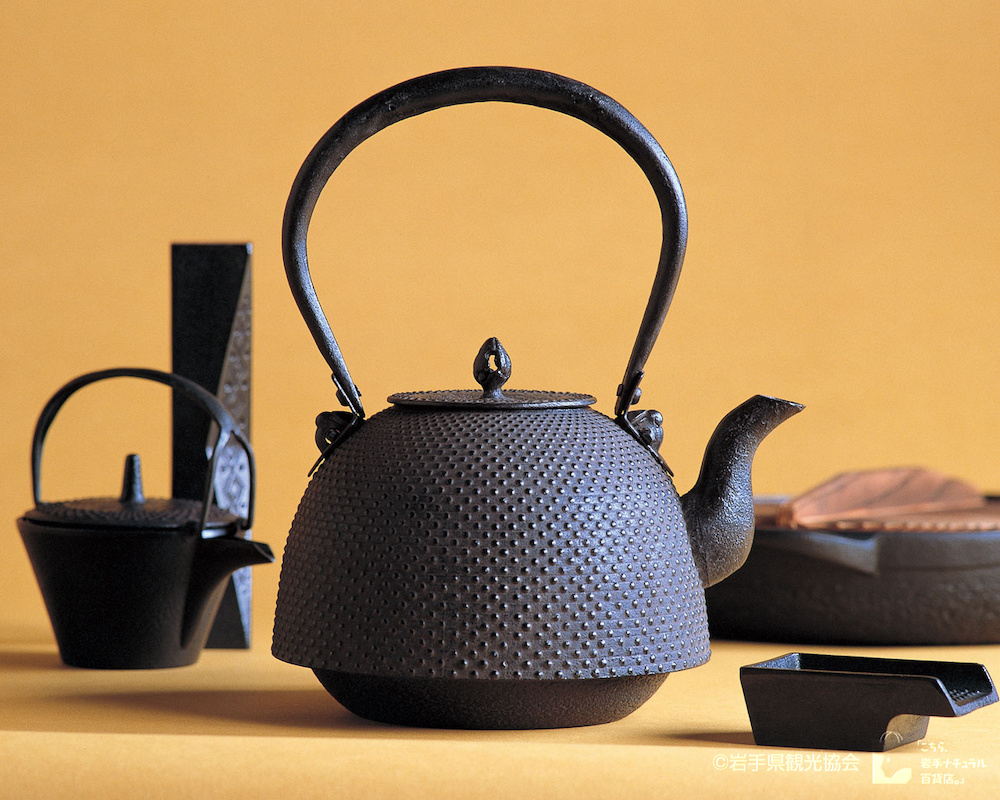
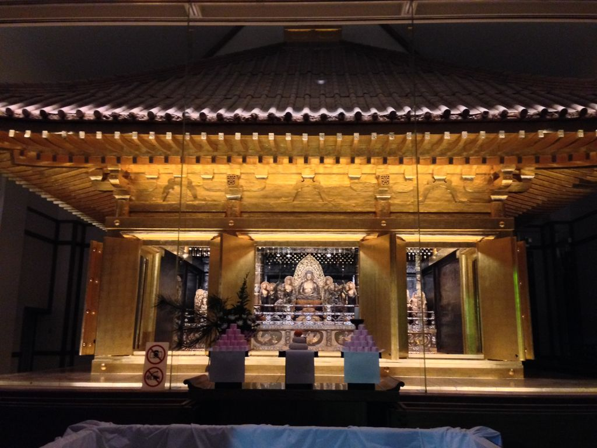
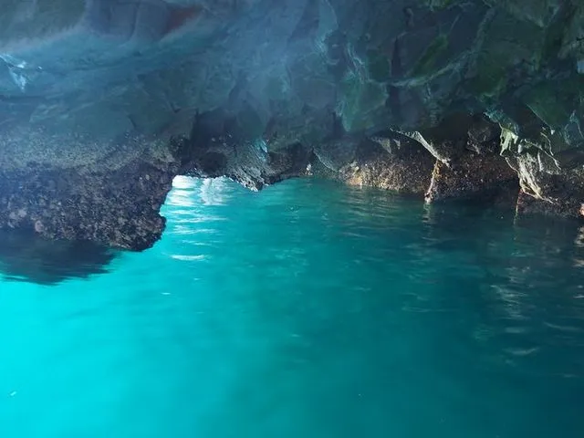
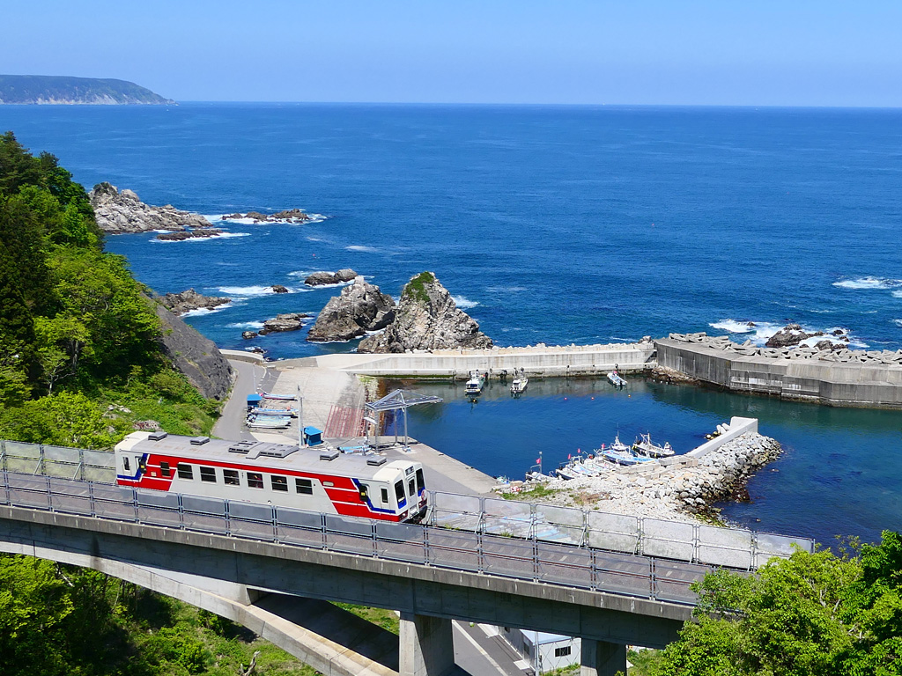
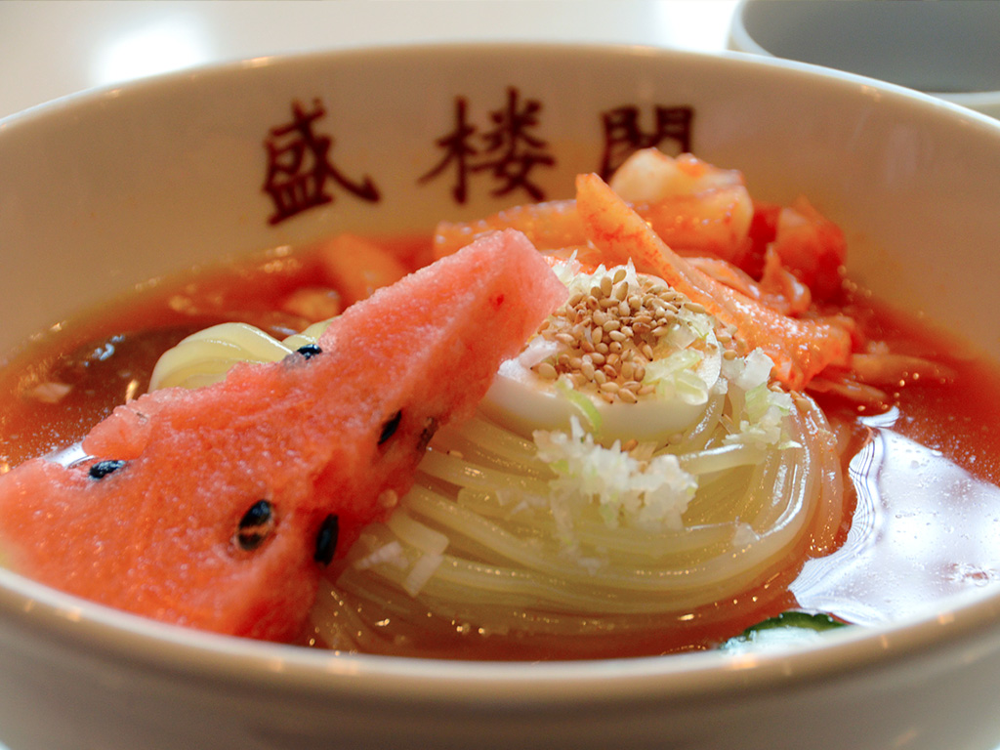

| 岩手の魅力 |
| 盛岡さんさ祭り |
南部鉄器 |
 |
「盛岡さんさ踊り」で大きな見所になっているのが、日本一の太鼓パレード。
退散した鬼が二度と里に来ないように、太鼓の音を山に響かせたのが始まりと伝えられます。
現在使われている太鼓は、直径1尺7寸（約50㎝）が標準。重さは大体6～7kg。
さんさ踊りが盛んな盛岡市には太鼓屋さんが3軒もあり、これは全国的にみても珍しいとのことです。
|
 |
炭素を多く含む銑鉄を主な原料とした鉄器で、主に盛岡市と奥州市で製造されます。
鉄瓶や鉄鍋のほか、風鈴などの商品があります。江戸時代の中期、南部藩主が京都から鋳物師
などを招いて茶の湯釜を作らせたのがはじまりとされ、後に藩の保護を受けた鉄瓶製造などにより発展しました。
|
| 中尊寺金色堂 |
青の洞窟（さっぱ船遊覧） |
|  |
中尊寺金色堂は、今から900年前に藤原清衡が建立した仏堂で、創建当時の姿のまま残った唯一のものであり、国宝建造物第1号の指定を受けています。
金色堂は平泉に花ひらいた素晴らしい文化の光として、今も輝き続けています。 は世界遺産の構成資産です。 金色堂の本尊は、光の仏ともいわれる阿弥陀如来です。
|
 |
陸中海岸の「青の洞窟」と異名をとる八戸穴は、青森県の八戸市まで続いているという伝説から名づけられました。
実際の穴の内部は8メートル程で行き止まりです。入口は半分海に浸かっている為、小舟でないと侵入できません。
穴の入り口から差し込む太陽光に透明な海水が美しく青く輝くことから、近年、陸中の青の洞窟とも呼ばれるようになりました。
|
| 三陸鉄道 |
盛岡冷麺 |
|  |
岩手県のリアス式海岸沿いを走る三陸鉄道は、単なる移動手段にとどまらず、観光に彩りをプラスしてくれる列車です。
今回は、三陸鉄道の魅力や三陸鉄道で行きたい観光スポット、おすすめのグルメ情報をご紹介します。三陸鉄道で
観光スポットへ足を運び、のどかな列車旅を楽しんでみませんか。
|
 |
ツルリとした食感でコシの強い麺が、牛ガラなどの冷製スープと牛すじ肉や卵、スイカ、
キムチなどとともに供されます。朝鮮半島の出身であるオーナーが昭和29年に開業した店で、
故郷の味を再現した「平壌（ピョンヤン）冷麺」が元祖とされます。昭和61年に市内で開催
された麺のサミットで高評価を得て、「盛岡冷麺」の名前が定着しました。
|